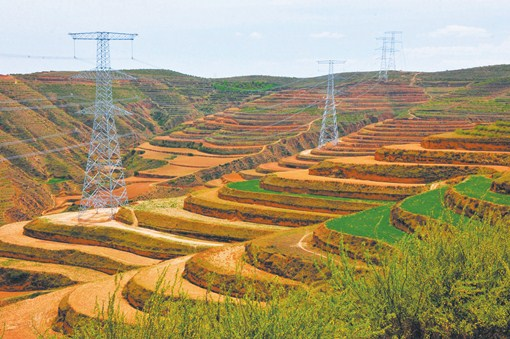
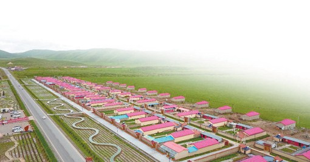

Magnificent 70 years · A new era of struggle - Power has injected a strong impetus into the economic development of the revolutionary old district
Published: 2019-09-03 Big mean small
In July 1935, reporter Fan Changjiang entered Gansu from Sichuan and then passed through Qinghai, Inner Mongolia and Shaanxi. The customs and customs along the road are recorded in his most famous "Northwest Corner of China". Fan Changjiang once mentioned that the Northwest interviews had two main purposes: one was to study the movement of the Red Army after the North, and the other was to try to understand the history and current situation of the Northwest China, which is about to become the rear of the War.

750 kV East Maibao Transmission Line Project
More than 80 years later, in July 2019, we came to Gansu to come to the place where the Red Army’s Long March passed, to explore the economic and social development, and to feel the new development brought by the development of electricity to this red land.
Yan Xiu Cun: Photovoltaic panels on the roof of the Red Fire Farmhouse
The car is driving in Gannan, and the eyes are full of colorful colors. Blue sky, green grass, white clouds, colorful prayers, if you want to find a different color from it, it must be red.
The Xiuxiu Village, which is adjacent to the 213 National Road, is located in Bohai Town, Luqu County, Gannan Tibetan Autonomous Prefecture. The red here is from the inside out.
In the 54-year-old "Gongqing Mujiale" operated by Gong Baojia, 3 rooms are full. This dark Tibetan man squats and his face is filled with a happy smile: "The six or seven months is the peak season here. Every day, the staff is full, and I can have a income of 20,000 yuan!"
This used to be tribute to Gong Baojia. In 2003, the Gongbaojia family lived in the village of Yuxiu. At that time, it was still a natural settlement of herders. Everyone built their own houses. Almost all the villagers lived by animal husbandry. People lived in a mess, the road became dirty, and sometimes Gong Baojia grazing came back late, only in the black light bonfire, and accidentally fell a mud. Everyone worked hard for a year, but the income was just enough to eat. At that time, the dilemma faced by every household in Yuxiu Village was that the strength was out and the improvement of life was limited.
2017年，尕秀村开始探索产业转型发展之路。尕海镇党委书记苏奴东珠告诉我们，因为紧邻国道且具有民族特色，尕秀村发展乡村牧家乐具有天时地利的条件。镇上先后投入6400万元资金改造水电路等基础设施，还统一规划全村风貌，发展现代畜牧业和生态旅游业融合的“双首位”产业。从2015年的5460元到2018年的9700元，尕秀村年人均可支配收入几乎翻了一倍。
在发展过程中，电力功不可没。

甘肃省甘南藏族自治州碌曲县尕秀村航拍图
“以前乱糟糟的电杆不见了，变得整齐又干净。更重要的是，现在各家各户都装上了3千瓦的光伏板，不仅能够满足各家生活和发展旅游的用电量，多余的电还能卖给国家电网。”苏奴东珠说有两件事让他很感动：一是在前期基础建设时，供电员工驻村4个月参与统一规划建设，每天他还没上班，供电员工就已经来了；二是供电员工定期为村民巡检光伏板。“这本不是他们的义务，可他们却十分上心。”苏奴东珠说。
碌曲县供电公司副总经理孙晓刚告诉我们，尕秀村一年光伏上网电量约9万千瓦时，每千瓦时电的上网电价是0.75元，依靠扶贫补贴，现在村里平均每年每户的光伏收益就有2800～3200元。
像尕秀村这样因得到电力滋润而蓬勃发展的藏族村落，在甘肃如雨后春笋般不断出现。在深度贫困的甘肃藏区，供电公司还采取产业扶贫、教育扶贫、扶志扶智工程等措施，把穷根挖出来，把持续发展的种子种下去。截至2019年上半年，国网甘肃电力扶贫类光伏电站（含集中式光伏扶贫项目）累计并网容量87.2747万千瓦，带动贫困户11.2万户，每年可产生稳定扶贫收益约3.36亿元。
哈达铺镇：千年旱码头产业升级的电力作为
在红军长征著名的“加油站”里，哈达铺镇不容忽略。除了开仓放粮，当年这里的药铺为不少红军战士看过病，还留下了“一把铜勺送中医”的感人故事。
千百年来，哈达铺镇一直都是远近闻名的旱码头。甘肃的牛马驴骡、中药材、皮革等特产，经过此地，被长途贩运到四川，而茶叶、盐巴、丝绸、水烟等也会被贩运回来。
如今，哈达铺镇的中药材行业依然繁盛。
7月4日，在义兴源中药材专业合作社门前，一股浓郁的中药材香气扑面而来。一名中年男子把成捆的大黄放进轰轰作响的切片机，旁边一名农妇有条不紊地手工挑选大黄切片，并将不合格的切片返工。
社长赵李正做了10年药材生意。“刚入行时，我们是把挖出的大黄、当归直接卖，可这样卖不上价钱。后来，我们学着把泥洗掉、皮去掉，利润多了一些。现在，我们切片加工，价钱自然上来了。门口是我去年购置的切片机，自家仓库里还有筛子机。”赵李正说。
赵李正家里两台翠绿色的大家伙如果每天轰隆隆地开上6小时，每个月需交电费1000多元，但加工后的药材价值却翻了好几倍。赵李正给记者算了一笔账：大黄不加工每公斤赚2毛钱，粗加工切片后每公斤能赚5毛钱，每年纯利润能增加近20万元。
“现在电价降了，电费能用手机交了，供电公司的人还经常上门帮我检查，我特别放心！”一般工商业电价降了，供电越来越可靠，赵李正打算再添置一台小型皮带输送机，他说以后再也不用靠工人手提肩扛药包来装满30吨的车了。赵李正是农村长大的孩子，过了30年的苦日子。现在，他体会到了奋斗的甜头，对生活很满足。
像义兴源这样的药材加工合作社在哈达铺镇有20多家。它们的发展还要在保证质量的情况下，降成本、拓销路。
随着兰渝铁路的发展，走出哈达铺镇有了更便捷的选择。以前，药材外送只能靠大货车，现在有货运成本更低、速度更快的电气化铁路，哈达铺镇的中药材卖到了更远的地方，药农的收入也增加不少。哈达铺站附近的牵引变电站中2条110千伏出线都是为高铁服务的，未来还将预留出一条35千伏出线。
火车跑得快，经济跑得快，都得靠电力带。哈达铺镇——这个曾经的旱码头，近年来产业持续升级，强劲的电力仿若源源活水注入到革命老区的土地中，促进当地经济持续增长。
华池县：能源基地安全生产的压舱石
华池县南梁镇是土地革命后期硕果仅存的革命根据地。新中国成立后，华池县成为长庆油田的主产区，也是陇东能源基地的重要组成部分。
夏季的陇东植被郁郁葱葱，长庆油田的采油区高高低低分布在黄土高原的塬上，从上空看像一艘航母时刻等待起航。这座巨型能源航母是中国石油天然气集团有限公司最大的盈利单位，也是华池县最大的用电客户之一。保障油田电力供应是当地供电公司的一件大事。
长庆油田采油二厂华池作业区调控中心主任张宇新对供电服务赞不绝口。令他印象最深的是9年前一次暴雨后的供电抢修——2010年8月10日，罕见的暴雨袭击了县城，6小时时间雨量达到50毫米。“雨太大了，冲倒了十几根电线杆，电停了，抽油机不动了，大家都非常着急。我们采油高度依赖电，停1个小时就要损失50万元。”张宇新回忆起那天还心有余悸。
当日，大雨冲毁了35千伏悦华石油专线十多根电杆。“必须要尽快解决供电问题！我们全员都到现场抢修了，一个也没少。车子上不去山，导线又太重，只好十来个人分圈来背，硬是把一盘导线背上了山。我们用最快速度完成了抢修复电。”参与这次抢修的方勇至今记忆犹新。
方勇是老红军方世禄的孙子，刚毕业时想去政府机关工作，于是恳求爷爷帮忙找路子。爷爷生气地拒绝了他，讲了让他始终牢记的话：“干一行，爱一行，无论做什么，都会有人生的成就。”
家风传承让方勇非常认同“人民电业为人民”这句话。从乡镇抄表员到县供电公司分管营销的副总经理，他深刻体会到供电公司一直在努力服务地方经济、特别是在保障能源安全供应上发挥了压舱石的作用。
以前，庆阳的石油都是通过输油管线送到外地炼化加工；现在，为了完善生产链，打造能源基地，庆阳石化公司将一部分原油就地炼化加工。2018年，庆阳石化公司上马“三油一化”项目。从筹备开始，庆阳供电公司主动对接，了解客户用电需求，提供定制化服务，把各项工作都做在客户前面。不到两个月，线路已能可靠供电，石化公司以最快速度投产。此外，庆阳供电公司还积极实施石油专线与公网联合检修，尽量压缩停电时间，挖掘石油企业用电潜力。2019年上半年，长庆油田庆阳供电公司辖区用电量同比增加6053万千瓦时。
长征已过80多年，甘肃这片土地风貌变幻，长征精神在这里继续传承。
国家电网甘肃电力（连心桥）共产党员服务队队员们还在为尕秀村村民检查光伏板。哈达铺的当归、黄芪通过高铁卖到了更远的地方。方勇服务的长庆油田还在源源不断地为中国工业发展供给石油。方勇把爷爷的勋章珍藏得很好，他说会把爷爷长征的故事讲给孩子们听……
信息来源：国家电网报